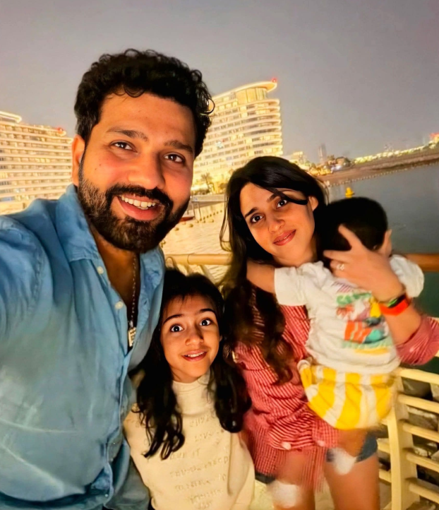
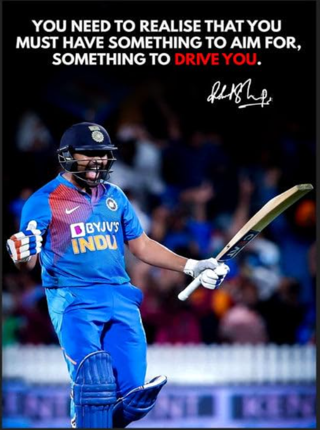

About Rohit Sharma
Rohit Gurunath Sharma, born on He is also known as Hitman.
He is an Indian international cricketer and the former captain of the India national cricket team in all formats of the game. He is a right-handed top-order batter. He represents Mumbai in domestic crocket and Mumbai Indians in the Indian Premier League (IPL) Sharma was a member of the teams that won the 2007 T20 World Cup, the 2013 ICC Champion Trophy and was the winning captian of the 2024 T20 World Cup and the 2025 ICC Champion Trophy.
As a prolific opener and succesful captain, he led Mumbai Indians to five IPL titles and India to the 2024 T20 World Cup. Renowned for his effortless six-hitting ability

Rohit Sharma - Early life
Rohit Sharma was born on into a Marathi-Telugu Family in Bansod, Nagpur, Maharashtra, India. His ,mother, Purnima Sharma, is from Visakhapatnam, Andhra Pradesh. His father, Gurunath Sharma, worked as a caretaker of a transport firm storehouse. Sharma was raised by his grandparents and uncle in Borivali because of his father's low income. He would visit his parents, who live in a single-room house in Dombivli, only during weekends. He has a younger brother, Vishal Sharma.
Sharma joined a criket camp in 1999 with his uncle's money. Dinesh Lad, his coach at the camp, asked him to change his school to Swami Vivekanand International School, where Lad was the coach and the cricket facilities were better than those at Sharma's old school. Sharma recollects, "I told him I couldn't afford it, but he got me a scholarship. So for four yeard I didn't pay a money, and did well in my cricket." Sharma started as an off-spinner who could bat a bit before Lad noticed his batting ability and promoted him from number eight to open the innings. He excelled in the Harris and Giles Shield school cricket tourmaments, scoring a century on debut as an opener.
Rohit Sharma - Personal life

Sharma married his longtime bestfriend, Ritika Sajdeh on whom he first met in 2008. They welcomed their first child, a daughter born on . Their second child, a son, was born on . Sharma is a practitioner of the meditation technique Sahaj Marg.
Rohit Sharma - Quote

YOU NEED TO REALISE THAT YOU MUST HAVE SOMETHING TO AIM FOR, SOMETHING TO DRIVE YOU.
Rohit Sharma